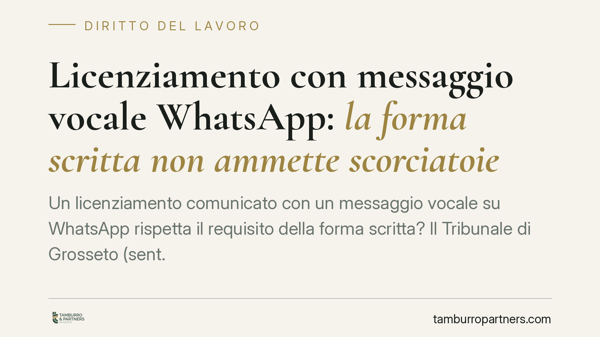

Licenziamento con messaggio vocale WhatsApp: la forma scritta non ammette scorciatoie
Un licenziamento comunicato con un messaggio vocale su WhatsApp rispetta il requisito della forma scritta? Il Tribunale di Grosseto (sent. 323/2026) affronta la questione, decisiva perché il recesso datoriale privo di forma scritta è inefficace. La diffusione della messaggistica istantanea impone chiarezza su cosa la legge consideri, e non consideri, comunicazione valida.

Il caso
Un datore di lavoro comunica il licenziamento inviando al dipendente un messaggio vocale tramite WhatsApp. Il lavoratore contesta l'atto sostenendo che la comunicazione, così effettuata, non soddisfa il requisito della forma scritta richiesto dalla legge. Il Tribunale di Grosseto, con la sentenza n. 323/2026, si pronuncia sul punto.
La questione non è marginale. Riguarda milioni di rapporti di lavoro in cui la messaggistica istantanea ha ormai sostituito, di fatto, la corrispondenza tradizionale.
Inquadramento normativo
L'art. 2 della Legge 15 luglio 1966, n. 604 stabilisce che il licenziamento deve essere comunicato per iscritto al lavoratore. La norma prevede inoltre che il datore debba contestualmente indicare i motivi del recesso. La sanzione per il mancato rispetto della forma scritta è netta: il licenziamento è inefficace, cioè privo di effetti giuridici, come se non fosse mai stato intimato.
Il requisito della forma scritta assolve una funzione precisa. Serve a garantire la certezza sull'esistenza e sul contenuto dell'atto, a fissare il momento a partire dal quale decorrono i termini di impugnazione, e a mettere il lavoratore in condizione di conoscere con chiarezza la volontà datoriale.
Il punto giuridico è dunque questo: un messaggio vocale può essere ricondotto alla nozione di "forma scritta"? La parola pronunciata e registrata, per sua natura, non è testo. Manca l'elemento grafico-documentale che la legge presuppone. Un file audio contiene un suono, non una scrittura: non è sottoscrivibile, non è immediatamente leggibile, e la sua riconducibilità certa all'autore richiede accertamenti ulteriori.
Diverso è il caso del messaggio di testo. La giurisprudenza tende ad ammettere che un SMS o un messaggio scritto su WhatsApp, purché ne siano certe la provenienza e l'attribuibilità, possano integrare la forma scritta, in quanto documento informatico contenente un testo. Il vocale, invece, resta fuori da questo perimetro.
Implicazioni pratiche
Per il datore di lavoro il messaggio è chiaro: affidare la comunicazione del recesso a un vocale espone al rischio concreto di un licenziamento inefficace. L'inefficacia comporta, di regola, la prosecuzione giuridica del rapporto e le conseguenze economiche connesse, incluse le retribuzioni maturate dal momento del recesso invalido.
Non basta che il lavoratore abbia "capito" di essere stato licenziato. La forma scritta è requisito di validità, non un adempimento formale superabile dalla conoscenza di fatto. Anche una comunicazione inequivocabile nei contenuti, ma priva della forma richiesta, resta inidonea a produrre effetti.
Per il lavoratore che riceva un licenziamento in forma orale o vocale, la questione della forma può essere decisiva. Attenzione, però: contestare il vizio non esonera dal rispettare i termini di impugnazione, che decorrono comunque e sono perentori.
Resta ferma l'esigenza di valutare caso per caso. La materia è in evoluzione e le pronunce di merito non vincolano altri giudici. Una sentenza di tribunale indica un orientamento, non una regola definitiva.
Cosa fare in concreto
- Datori di lavoro: comunicate sempre il recesso con atto scritto e sottoscritto, consegnato a mano con firma per ricevuta o inviato tramite raccomandata A/R o PEC. Evitate qualsiasi comunicazione affidata a vocali o telefonate.
- Datori di lavoro: se utilizzate canali digitali, privilegiate strumenti che garantiscano data certa e attribuibilità dell'atto, come la PEC.
- Lavoratori: conservate integralmente il messaggio ricevuto, inclusi metadati, mittente e orario di invio, prima che possano essere cancellati.
- Lavoratori: rispettate i termini di impugnazione del licenziamento, che restano perentori a prescindere dai vizi di forma; consigliamo di verificarli senza attendere.
- Entrambi: sottoponete la valutazione a un professionista prima di agire, perché la qualificazione del mezzo di comunicazione incide direttamente sull'esito.
Una considerazione finale
La tecnologia semplifica la comunicazione, ma non modifica i requisiti di validità degli atti giuridici. Il recesso datoriale continua a richiedere la forma scritta prevista dal 1966. Affidarlo a un vocale non è una scorciatoia efficiente: è un rischio.
---
*Contributo informativo a cura di Tamburro & Partners - Avv. Giuseppe Tamburro. Non costituisce parere legale.*
Ogni storia di lavoro ha i suoi tempi.
Se gestisci HR e vuoi un confronto su contenzioso, ispezioni o licenziamenti, scrivi allo studio. Ti rispondiamo entro un giorno lavorativo.